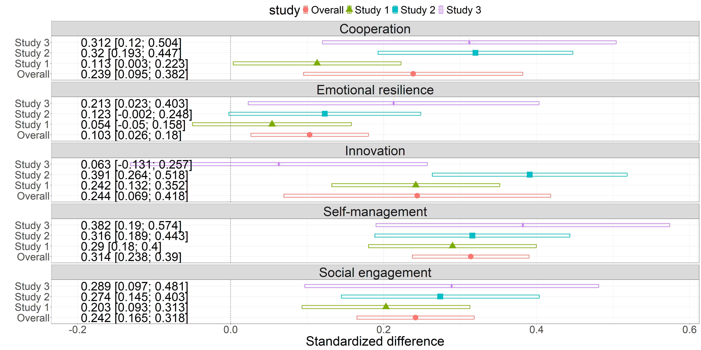

| Stud without SLDs | Stud with SLDs | |
|---|---|---|
| Age | 15.735 (1.93) | 15.468 (2.03) |
| Self-management | 3.161 (0.53) | 3.305 (0.51) |
| Innovation | 3.099 (0.54) | 3.238 (0.55) |
| Cooperation | 3.373 (0.5) | 3.433 (0.5) |
| Social engagement | 2.98 (0.62) | 3.097 (0.62) |
| Emotional resilience | 2.775 (0.69) | 2.776 (0.68) |
| Life satisfaction | 4.274 (1.34) | 4.335 (1.32) |
| Grades: Italian | 6.808 (0.91) | 7.324 (1.05) |
| Grades: Math | 6.563 (1.27) | 7.122 (1.42) |
Social, emotional, and behavioral skills in students with specific learning disabilities
…and beyond
2025-12-02
Specific learning disabilities (SLD)
SLDs are a class of neurodevelopmental disorders characterized by difficulties in acquiring foundational academic skills in reading, spelling, writing, and/or math1 .
- Dislexya
- Discalculia
- Dysgraphia
- …

Non-cognitive aspects of SLD
- Attitudes toward school
- Self-esteem
- Motivation
- Achievement emotions
- Study strategies
- Well-being
- …
Non-cognitive aspects of SLD
- Attitudes toward school
- Self-esteem
- Motivation
- Achievement emotions
- Study strategies
- Well-being
- …

Social, emotional, and behavioral (soft) skills
These represent the abilities to establish and maintain social relationships, regulate emotions, and effectively manage behaviors toward goals and learning and mainly fall into five areas6:
- Self-management skills
- Social engagement skills
- Cooperation skills
- Innovation skills
- Emotional resilience skills

Aims & hypotheses 
AIMS & HYPOTHESES
- Aim 1: Identify the SEB profile of students with SLDs:
- H1.1: Lower self-management skills
- H1.2: Lower social engagement and cooperation skills
- H1.3: Lower emotional resilience skills
- H1.4: Similar or higher innovation skills
- Aim 2: Test the differential impact of SEB skills
- H2.1: SEB skills predict academic achievement more in students with SLDs
- H2.2: SEB skills predict non-academic outcomes similarly in the two populations.
Participants & materials 

- 2965 participants
- 359 with SLDs (169 females)
- 2606 without SLDs (1420 females)
MATERIALS
- SEB skills: BESSI-192 (Feraco et al., 2024)
- Life satisfaction scale (Di Fabio & Gori, 2016)
- Academic achievement: average grades in Italian and Math
Interaction effects

Aims, hypotheses, and materials 

AIMS & HYPOTHESES
- Aim 1: Replicate mean-level differences results:
- H1.1: Lower self-management, social engagement, and innovation skills
- H1.2: Slightly lower cooperation skills
- H1.3: Similar emotional resilience skills
- Aim 2: Replicate interaction effects
- H2.1: SEB skills predict academic achievement more in students with SLDs
- H2.2: SEB skills predict non-academic outcomes similarly in the two populations
Participants & materials 

- 5075 (valid) participants
- 243 with SLDs (112 females)
- 4832 without SLDs (2649 females)
| Stud without SLDs | Stud with SLDs | |
|---|---|---|
| Age | 18.236 (0.95) | 18.177 (1.01) |
| Self-management | 0.016 (0.99) | -0.324 (1.09) |
| Innovation | 0.018 (0.99) | -0.36 (1.14) |
| Cooperation | 0.016 (0.99) | -0.323 (1.15) |
| Social engagement | 0.013 (1) | -0.261 (1.06) |
| Emotional resilience | 0.004 (1) | -0.081 (1.03) |
| Mindset | 0.012 (1) | -0.267 (1.04) |
| Learning goals | 0.001 (1) | -0.014 (1.1) |
| Ac. self-efficacy | 0.022 (0.99) | -0.483 (1.06) |
| Positive emotions | 0.001 (1) | -0.021 (1.06) |
| Negative emotions | -0.003 (1) | 0.054 (0.98) |
| Life satisfaction | 0.007 (1) | -0.135 (1.06) |
| Peer relationships | 0.011 (1) | -0.243 (0.96) |
| Ac. grades | 0.028 (0.99) | -0.564 (1.1) |
MATERIALS
- SEB skills: BESSI-45 (Feraco et al., 2024)
- SRL factors: AMOS (De Beni et al., 2014)
- Peer relationships (Brock et al., 1998)
- Life satisfaction scale (Di Fabio & Gori, 2016)
- Academic achievement: average grades
Meta-analytical summary
We also conducted a similar study in University students (here Study 3).

INCLUDING:
- Study 1
- Study 2
- Study 3 on university students

Three preregistered experimental studies on traits and skills change goals 


- AIMS: Explore students’ skills change goals and associated beliefs and compare them to traits
- METHOD: Experimental manipulation of skills and traits definition and items
- SAMPLES:
- Study 1: 126 US and 139 Italian university students.
- Study 2: 200+ Italian university students [ongoing].
- Study 3: High school students, parents and teachers [just started]


Results - Change goals
All participants reported they want to increase at least one of their skills, and 87% all their skills.
They also prefer changing their self-management and social engagement skills than their traits.

Results - Change beliefs
- Participants think it would be easier and more impactful to change (some) skills than traits

Future directions
- Continue with skills change goals research (EAPP grant just won)
- Continue working on SEB skills measurement
- Start planning and conducting skills interventions
- And much more (including Geographical Psychology)


Social, emotional, and behavioral (soft) skills
Many national and international organizations and institutions think so2–5 and label these as “soft skills”, “socio-emotional skills”, “life skills” …
Useful for